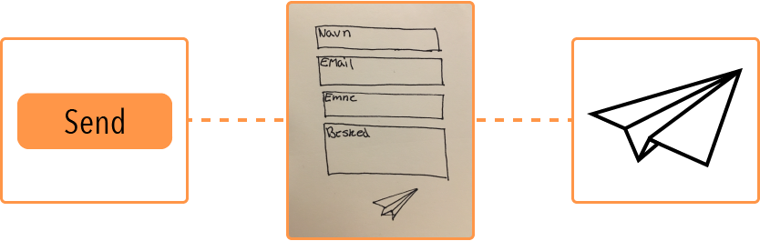

Flow 5


Redesign af portfolio
Flow 5 gik ud på, at redesigne mit portfolio med udgangspunkt i protfolioet fra flow 2. At redesigne mit daværende protfolio gav mig muligheden for at gå mere i dybden med de forskellige områder. Blandt andet at skabe et portfolio som både fremstår professionelt og personligt, og som udover det viser mine kompetancer som multiemedie designer.
Brugertest
For at få et bedre syn på hvad jeg skulle fokusere på i mit redesign, lagde jeg ud med en tænke-højt-test på mit tidligere portfolio. Ud fra testen blev jeg klogere på, at der manglede forklaring på de forskellige projekter, at ting jeg mente i sig selv gav mening, behøvede en forklaring.
Efter jeg færdig gjorde mit nye protfolio lavede jeg igen en tænke-højt-test, dog på nye personer som ikke havde set det tidligere. Dette gjorde jeg for at sikkere mig at brugeren i sidste ende, er i stand til at navigere rundt på siden uden at blive misledt eller komme i tvivl om indholdets betydning.
Planlægning
For at komme i mål med projektet var det vigtigt for mig, at komme fra start med en oganiseret plan over, hvad der skulle laves og hvornår. Dertil udarbejdede jeg PBS, WBS og et Gantt-kort, for at være sikker på, at jeg havde overblik over opgaven og tiden til at løse den. Se mere her
Farver
Jeg havde mange overvejelser oppe omkring, at ændre min farve fra den første udgave af portfolioet, men jeg endte ud i at holde mig til den orange farve. Orange er en varm og opløftende farve, som henvender sig til følelsen af energi, tillid og entusiasme. Hvilket alt sammen passer godt på den person jeg er, og hvordan jeg ønsker folk skal føle når de bevæger sig rundt i mit portfolioet. Den orange farve jeg har valgt har hex koden #ff9648, hvilket er en orange der hælder mere til den rødlige side, hvilket gør den mere varm og spændende at se på.
Typografi
Overskrifter
Til overskrifter og navigationen har jeg brugt google fonten Open Sans Condensed. Valget faldt på denne, da den falder godt ind i helheden af mit portfolio, og har et let og moderne udtryk.
Brødtekst
Til alt brødtekst har jeg brugt google fonten Source Sans Pro. Jeg har valgt at bruge en anden font til større tekster, da Open Sans Condensed er en meget smal font og derfor flyder sammen i større tekster.
Ikoner
Alle ikoner er lavet med hjælp af illustrator. Jeg har kørt en rødtråd i form af et kasset design igennem de fleste ikoner. Dog har jeg enkelte som stikker lidt i en anden retning. På min kontakt side valgte jeg, at udskifte den traditionele send knab med et papirsfly, da det leger lidt mere med ideen om at "sende" beskeden og derfor føles mere personlig.
